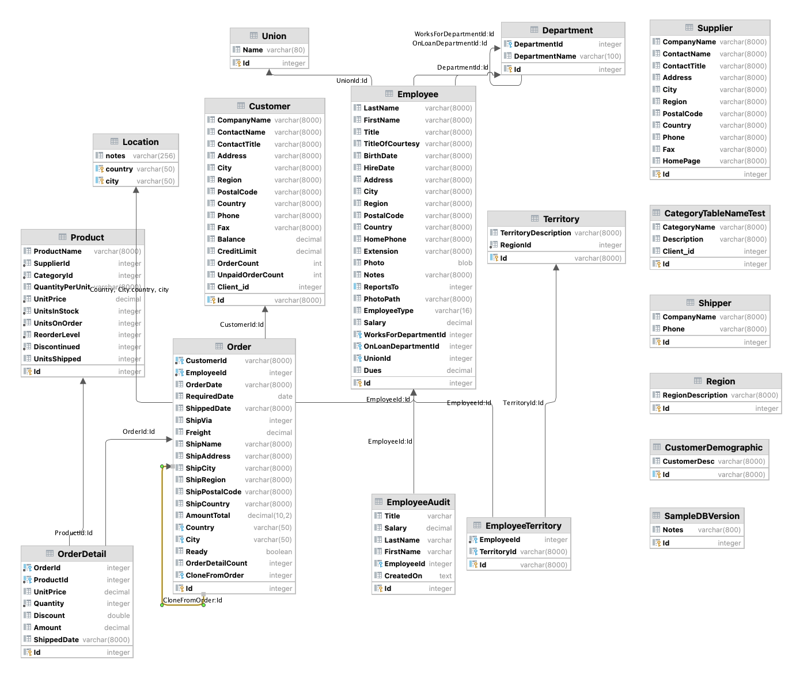

Behave Logic Report
Behave Logic Report
This is the sample project from API Logic Server, based on the Northwind database (sqlite database located in the database folder - no installation required):

The sample Scenarios below were chosen to illustrate the basic patterns of using rules. Open the disclosure box ("Tests - and their logic...") to see the implementation and notes.
The following report was created during test suite execution.
Behave Logic Report
Feature: About Sample
Scenario: Transaction Processing
Scenario: Transaction Processing
Given Sample Database
When Transactions are submitted
Then Enforce business policies with Logic (rules + code)
Tests - and their logic - are transparent.. click to see Logic
Rules Used in Scenario: Transaction Processing
Category
1. Constraint Function: <function declare_logic.<locals>.valid_category_description at 0x10b83fba0>
The following rules have been activate
- 2024-07-12 14:57:05,237 - logic_logger - DEBU
Rule Bank[0x10a431ca0] (loaded 2024-07-12 14:56:46.929015
Mapped Class[Customer] rules
Constraint Function: None
Constraint Function: None
Derive Customer.Balance as Sum(Order.AmountTotal Where <function declare_logic.<locals>.<lambda> at 0x10b83fd80>
RowEvent Customer.customer_defaults()
Derive Customer.UnpaidOrderCount as Count(<class 'database.models.Order'> Where <function declare_logic.<locals>.<lambda> at 0x10b9596c0>
Derive Customer.OrderCount as Count(<class 'database.models.Order'> Where None
Mapped Class[Employee] rules
Constraint Function: None
Constraint Function: <function declare_logic.<locals>.raise_over_20_percent at 0x10b959940>
Copy to: EmployeeAudi
Mapped Class[Category] rules
Constraint Function: <function declare_logic.<locals>.valid_category_description at 0x10b83fba0>
Mapped Class[Order] rules
Derive Order.AmountTotal as Sum(OrderDetail.Amount Where None
RowEvent Order.send_order_to_shipping()
RowEvent Order.congratulate_sales_rep()
RowEvent Order.do_not_ship_empty_orders()
Constraint Function: <function declare_logic.<locals>.ship_ready_orders_only at 0x10b9591c0>
RowEvent Order.order_defaults()
Derive Order.OrderDetailCount as Count(<class 'database.models.OrderDetail'> Where None
RowEvent Order.clone_order()
Derive Order.OrderDate as Formula (1): as_expression=lambda row: datetime.datetime.now()
Mapped Class[OrderDetail] rules
Derive OrderDetail.Amount as Formula (1): as_expression=lambda row: row.UnitPrice * row.Qua [...
Derive OrderDetail.UnitPrice as Copy(Product.UnitPrice
RowEvent OrderDetail.order_detail_defaults()
Derive OrderDetail.ShippedDate as Formula (2): row.Order.ShippedDat
Mapped Class[Product] rules
Derive Product.UnitsInStock as Formula (1): <function
Derive Product.UnitsShipped as Sum(OrderDetail.Quantity Where <function declare_logic.<locals>.<lambda> at 0x10b959580>
Logic Bank - 32 rules loaded - 2024-07-12 14:57:05,243 - logic_logger - INF
Logic Bank - 32 rules loaded - 2024-07-12 14:57:05,243 - logic_logger - INF
Logic Phase: ROW LOGIC (session=0x10dbbc710) (sqlalchemy before_flush) - 2024-07-12 14:57:06,076 - logic_logger - INF
..Shipper[1] {Delete - client} Id: 1, CompanyName: Speedy Express, Phone: (503) 555-9831 row: 0x10dbbce30 session: 0x10dbbc710 ins_upd_dlt: dlt - 2024-07-12 14:57:06,077 - logic_logger - INF
Logic Phase: ROW LOGIC (session=0x10dcac9e0) (sqlalchemy before_flush) - 2024-07-12 14:57:06,151 - logic_logger - INF
..Category[1] {Update - client} Id: 1, CategoryName: Beverages, Description: [Soft drinks, coffees, teas, beers, and ales-->] x, Client_id: 1 row: 0x10dcad6a0 session: 0x10dcac9e0 ins_upd_dlt: upd - 2024-07-12 14:57:06,151 - logic_logger - INF
..Category[1] {Constraint Failure: Description cannot be 'x'} Id: 1, CategoryName: Beverages, Description: [Soft drinks, coffees, teas, beers, and ales-->] x, Client_id: 1 row: 0x10dcad6a0 session: 0x10dcac9e0 ins_upd_dlt: upd - 2024-07-12 14:57:06,152 - logic_logger - INF
Feature: Application Integration
Scenario: GET Customer
Scenario: GET Customer
Given Customer Account: VINET
When GET Orders API
Then VINET retrieved
Scenario: GET Department
Scenario: GET Department
Given Department 2
When GET Department with SubDepartments API
Then SubDepartments returned
Feature: Authorization
Scenario: Grant
Scenario: Grant
Given NW Test Database
When u1 GETs Categories
Then Only 1 is returned
Scenario: Multi-tenant
Scenario: Multi-tenant
Given NW Test Database
When sam GETs Customers
Then only 3 are returned
Scenario: Global Filters
Scenario: Global Filters
Given NW Test Database
When sam GETs Departments
Then only 8 are returned
Scenario: Global Filters With Grants
Scenario: Global Filters With Grants
Given NW Test Database
When s1 GETs Customers
Then only 1 customer is returned
Scenario: CRUD Permissions
Scenario: CRUD Permissions
Given NW Test Database
When r1 deletes a Shipper
Then Operation is Refused
Feature: Optimistic Locking
Scenario: Get Category
Scenario: Get Category
Given Category: 1
When Get Cat1
Then Expected Cat1 Checksum
Scenario: Valid Checksum
Scenario: Valid Checksum
Given Category: 1
When Patch Valid Checksum
Then Valid Checksum, Invalid Description
Scenario: Missing Checksum
Scenario: Missing Checksum
Given Category: 1
When Patch Missing Checksum
Then Valid Checksum, Invalid Description
Scenario: Invalid Checksum
Scenario: Invalid Checksum
Given Category: 1
When Patch Invalid Checksum
Then Invalid Checksum
Feature: Place Order
Scenario: Order Made Not Ready
Scenario: Order Made Not Ready
Given Customer Account: ALFKI
When Ready Flag is Reset
Then Logic Decreases Balance
Tests - and their logic - are transparent.. click to see Logic
Logic Doc for scenario: Order Made Not Ready
We reset Order.Ready.
This removes the order from contingent derivations (e.g., the Customer.Balance),
and constraints.
Key Takeaway: adjustment from change in qualification condition
Rules Used in Scenario: Order Made Not Ready
Customer
1. RowEvent Customer.customer_defaults()
2. Derive Customer.UnpaidOrderCount as Count(<class 'database.models.Order'> Where <function declare_logic.<locals>.<lambda> at 0x10b9596c0>)
3. Derive Customer.OrderCount as Count(<class 'database.models.Order'> Where None)
4. Derive Customer.Balance as Sum(Order.AmountTotal Where <function declare_logic.<locals>.<lambda> at 0x10b83fd80>)
Order
5. RowEvent Order.do_not_ship_empty_orders()
6. RowEvent Order.send_order_to_shipping()
7. RowEvent Order.congratulate_sales_rep()
8. RowEvent Order.clone_order()
9. RowEvent Order.order_defaults()
Logic Phase: ROW LOGIC (session=0x10d963020) (sqlalchemy before_flush) - 2024-07-12 14:57:06,406 - logic_logger - INF
..Order[11011] {Update - client} Id: 11011, CustomerId: ALFKI, EmployeeId: 3, OrderDate: 2014-04-09, RequiredDate: 2014-05-07, ShippedDate: None, ShipVia: 1, Freight: 1.2100000000, ShipName: Alfred's Futterkiste, ShipAddress: Obere Str. 57, ShipCity: Berlin, ShipRegion: Western Europe, ShipZip: 12209, ShipCountry: Germany, AmountTotal: 960.00, Country: None, City: None, Ready: [True-->] False, OrderDetailCount: 2, CloneFromOrder: None row: 0x10db4e060 session: 0x10d963020 ins_upd_dlt: upd - 2024-07-12 14:57:06,407 - logic_logger - INF
..Order[11011] {Prune Formula: OrderDate [[]]} Id: 11011, CustomerId: ALFKI, EmployeeId: 3, OrderDate: 2014-04-09, RequiredDate: 2014-05-07, ShippedDate: None, ShipVia: 1, Freight: 1.2100000000, ShipName: Alfred's Futterkiste, ShipAddress: Obere Str. 57, ShipCity: Berlin, ShipRegion: Western Europe, ShipZip: 12209, ShipCountry: Germany, AmountTotal: 960.00, Country: None, City: None, Ready: [True-->] False, OrderDetailCount: 2, CloneFromOrder: None row: 0x10db4e060 session: 0x10d963020 ins_upd_dlt: upd - 2024-07-12 14:57:06,408 - logic_logger - INF
....Customer[ALFKI] {Update - Adjusting Customer: Balance} Id: ALFKI, CompanyName: Alfreds Futterkiste, ContactName: Maria Anders, ContactTitle: Sales Representative, Address: Obere Str. 57A, City: Berlin, Region: Western Europe, PostalCode: 12209, Country: Germany, Phone: 030-0074321, Fax: 030-0076545, Balance: [2102.0000000000-->] 1142.0000000000, CreditLimit: 2300.0000000000, OrderCount: 15, UnpaidOrderCount: 10, Client_id: 1 row: 0x10dcaf890 session: 0x10d963020 ins_upd_dlt: upd - 2024-07-12 14:57:06,412 - logic_logger - INF
Logic Phase: COMMIT LOGIC (session=0x10d963020) - 2024-07-12 14:57:06,416 - logic_logger - INF
..Order[11011] {Commit Event} Id: 11011, CustomerId: ALFKI, EmployeeId: 3, OrderDate: 2014-04-09, RequiredDate: 2014-05-07, ShippedDate: None, ShipVia: 1, Freight: 1.2100000000, ShipName: Alfred's Futterkiste, ShipAddress: Obere Str. 57, ShipCity: Berlin, ShipRegion: Western Europe, ShipZip: 12209, ShipCountry: Germany, AmountTotal: 960.00, Country: None, City: None, Ready: [True-->] False, OrderDetailCount: 2, CloneFromOrder: None row: 0x10db4e060 session: 0x10d963020 ins_upd_dlt: upd - 2024-07-12 14:57:06,416 - logic_logger - INF
..Order[11011] {Commit Event} Id: 11011, CustomerId: ALFKI, EmployeeId: 3, OrderDate: 2014-04-09, RequiredDate: 2014-05-07, ShippedDate: None, ShipVia: 1, Freight: 1.2100000000, ShipName: Alfred's Futterkiste, ShipAddress: Obere Str. 57, ShipCity: Berlin, ShipRegion: Western Europe, ShipZip: 12209, ShipCountry: Germany, AmountTotal: 960.00, Country: None, City: None, Ready: [True-->] False, OrderDetailCount: 2, CloneFromOrder: None row: 0x10db4e060 session: 0x10d963020 ins_upd_dlt: upd - 2024-07-12 14:57:06,417 - logic_logger - INF
Logic Phase: AFTER_FLUSH LOGIC (session=0x10d963020) - 2024-07-12 14:57:06,422 - logic_logger - INF
..Order[11011] {AfterFlush Event} Id: 11011, CustomerId: ALFKI, EmployeeId: 3, OrderDate: 2014-04-09, RequiredDate: 2014-05-07, ShippedDate: None, ShipVia: 1, Freight: 1.2100000000, ShipName: Alfred's Futterkiste, ShipAddress: Obere Str. 57, ShipCity: Berlin, ShipRegion: Western Europe, ShipZip: 12209, ShipCountry: Germany, AmountTotal: 960.00, Country: None, City: None, Ready: [True-->] False, OrderDetailCount: 2, CloneFromOrder: None row: 0x10db4e060 session: 0x10d963020 ins_upd_dlt: upd - 2024-07-12 14:57:06,423 - logic_logger - INF
Scenario: Order Made Ready
Scenario: Order Made Ready
Given Customer Account: ALFKI
When Ready Flag is Set
Then Logic Increases Balance
Tests - and their logic - are transparent.. click to see Logic
Logic Doc for scenario: Order Made Ready
This illustrates the ready flag pattern: 1. Add a ready flag to the Order 2. Make logic contingent on the ready flag: * Customer.Balance is increased only if the Order is ready * Empty Orders are not rejected
This enables the user to submit multiple transactions (add order details, alter them etc), before making the order ready (like a checkout).
Until then, Customer's Balance adjustments, or empty orders constraints do not fire.
Key Takeaway: the ready flag defers constraints/derivations until the user is ready.
Key Takeaway: adjustment from change in qualification condition
Rules Used in Scenario: Order Made Ready
Customer
1. RowEvent Customer.customer_defaults()
2. Derive Customer.UnpaidOrderCount as Count(<class 'database.models.Order'> Where <function declare_logic.<locals>.<lambda> at 0x10b9596c0>)
3. Derive Customer.OrderCount as Count(<class 'database.models.Order'> Where None)
4. Derive Customer.Balance as Sum(Order.AmountTotal Where <function declare_logic.<locals>.<lambda> at 0x10b83fd80>)
Order
5. RowEvent Order.do_not_ship_empty_orders()
6. RowEvent Order.send_order_to_shipping()
7. RowEvent Order.congratulate_sales_rep()
8. RowEvent Order.clone_order()
9. RowEvent Order.order_defaults()
Logic Phase: ROW LOGIC (session=0x10dd240b0) (sqlalchemy before_flush) - 2024-07-12 14:57:06,786 - logic_logger - INF
..Order[11011] {Update - client} Id: 11011, CustomerId: ALFKI, EmployeeId: 3, OrderDate: 2014-04-09, RequiredDate: 2014-05-07, ShippedDate: None, ShipVia: 1, Freight: 1.2100000000, ShipName: Alfred's Futterkiste, ShipAddress: Obere Str. 57, ShipCity: Berlin, ShipRegion: Western Europe, ShipZip: 12209, ShipCountry: Germany, AmountTotal: 960.00, Country: None, City: None, Ready: [False-->] True, OrderDetailCount: 2, CloneFromOrder: None row: 0x10dd27740 session: 0x10dd240b0 ins_upd_dlt: upd - 2024-07-12 14:57:06,787 - logic_logger - INF
..Order[11011] {Prune Formula: OrderDate [[]]} Id: 11011, CustomerId: ALFKI, EmployeeId: 3, OrderDate: 2014-04-09, RequiredDate: 2014-05-07, ShippedDate: None, ShipVia: 1, Freight: 1.2100000000, ShipName: Alfred's Futterkiste, ShipAddress: Obere Str. 57, ShipCity: Berlin, ShipRegion: Western Europe, ShipZip: 12209, ShipCountry: Germany, AmountTotal: 960.00, Country: None, City: None, Ready: [False-->] True, OrderDetailCount: 2, CloneFromOrder: None row: 0x10dd27740 session: 0x10dd240b0 ins_upd_dlt: upd - 2024-07-12 14:57:06,788 - logic_logger - INF
....Customer[ALFKI] {Update - Adjusting Customer: Balance} Id: ALFKI, CompanyName: Alfreds Futterkiste, ContactName: Maria Anders, ContactTitle: Sales Representative, Address: Obere Str. 57A, City: Berlin, Region: Western Europe, PostalCode: 12209, Country: Germany, Phone: 030-0074321, Fax: 030-0076545, Balance: [1142.0000000000-->] 2102.0000000000, CreditLimit: 2300.0000000000, OrderCount: 15, UnpaidOrderCount: 10, Client_id: 1 row: 0x10dcae1b0 session: 0x10dd240b0 ins_upd_dlt: upd - 2024-07-12 14:57:06,790 - logic_logger - INF
Logic Phase: COMMIT LOGIC (session=0x10dd240b0) - 2024-07-12 14:57:06,794 - logic_logger - INF
..Order[11011] {Commit Event} Id: 11011, CustomerId: ALFKI, EmployeeId: 3, OrderDate: 2014-04-09, RequiredDate: 2014-05-07, ShippedDate: None, ShipVia: 1, Freight: 1.2100000000, ShipName: Alfred's Futterkiste, ShipAddress: Obere Str. 57, ShipCity: Berlin, ShipRegion: Western Europe, ShipZip: 12209, ShipCountry: Germany, AmountTotal: 960.00, Country: None, City: None, Ready: [False-->] True, OrderDetailCount: 2, CloneFromOrder: None row: 0x10dd27740 session: 0x10dd240b0 ins_upd_dlt: upd - 2024-07-12 14:57:06,794 - logic_logger - INF
..Order[11011] {Commit Event} Id: 11011, CustomerId: ALFKI, EmployeeId: 3, OrderDate: 2014-04-09, RequiredDate: 2014-05-07, ShippedDate: None, ShipVia: 1, Freight: 1.2100000000, ShipName: Alfred's Futterkiste, ShipAddress: Obere Str. 57, ShipCity: Berlin, ShipRegion: Western Europe, ShipZip: 12209, ShipCountry: Germany, AmountTotal: 960.00, Country: None, City: None, Ready: [False-->] True, OrderDetailCount: 2, CloneFromOrder: None row: 0x10dd27740 session: 0x10dd240b0 ins_upd_dlt: upd - 2024-07-12 14:57:06,794 - logic_logger - INF
Logic Phase: AFTER_FLUSH LOGIC (session=0x10dd240b0) - 2024-07-12 14:57:06,796 - logic_logger - INF
..Order[11011] {AfterFlush Event} Id: 11011, CustomerId: ALFKI, EmployeeId: 3, OrderDate: 2014-04-09, RequiredDate: 2014-05-07, ShippedDate: None, ShipVia: 1, Freight: 1.2100000000, ShipName: Alfred's Futterkiste, ShipAddress: Obere Str. 57, ShipCity: Berlin, ShipRegion: Western Europe, ShipZip: 12209, ShipCountry: Germany, AmountTotal: 960.00, Country: None, City: None, Ready: [False-->] True, OrderDetailCount: 2, CloneFromOrder: None row: 0x10dd27740 session: 0x10dd240b0 ins_upd_dlt: upd - 2024-07-12 14:57:06,797 - logic_logger - INF
..Order[11011] {Sending Order to Shipping << not activated >>} Id: 11011, CustomerId: ALFKI, EmployeeId: 3, OrderDate: 2014-04-09, RequiredDate: 2014-05-07, ShippedDate: None, ShipVia: 1, Freight: 1.2100000000, ShipName: Alfred's Futterkiste, ShipAddress: Obere Str. 57, ShipCity: Berlin, ShipRegion: Western Europe, ShipZip: 12209, ShipCountry: Germany, AmountTotal: 960.00, Country: None, City: None, Ready: [False-->] True, OrderDetailCount: 2, CloneFromOrder: None row: 0x10dd27740 session: 0x10dd240b0 ins_upd_dlt: upd - 2024-07-12 14:57:06,806 - logic_logger - INF
Scenario: Good Order Custom Service
Scenario: Good Order Custom Service
Given Customer Account: ALFKI
When Good Order Placed
Then Logic adjusts Balance (demo: chain up)
Then Logic adjusts Products Reordered
Then Logic sends email to salesrep
Then Logic sends kafka message
Then Logic adjusts aggregates down on delete order
Tests - and their logic - are transparent.. click to see Logic
Logic Doc for scenario: Good Order Custom Service
Familiar logic patterns:
- Constrain a derived result (Check Credit)
- Chain up, to adjust parent sum/count aggregates (AmountTotal, Balance)
- Events for Lib Access (Kafka, email messages)
Logic Design ("Cocktail Napkin Design")
- Customer.Balance <= CreditLimit
- Customer.Balance = Sum(Order.AmountTotal where unshipped)
- Order.AmountTotal = Sum(OrderDetail.Amount)
- OrderDetail.Amount = Quantity * UnitPrice
- OrderDetail.UnitPrice = copy from Product
We place an Order with an Order Detail. It's one transaction.
Note how the Order.AmountTotal and Customer.Balance are adjusted as Order Details are processed.
Similarly, the Product.UnitsShipped is adjusted, and used to recompute UnitsInStock

Key Takeaway: sum/count aggregates (e.g.,
Customer.Balance) automate chain up multi-table transactions.
Events - Extensible Logic
Inspect the log for Hi, Andrew - Congratulate Nancy on their new order.
The congratulate_sales_rep event illustrates logic
Extensibility
- using Python to provide logic not covered by rules,
like non-database operations such as sending email or messages.

There are actually multiple kinds of events:
- Before row logic
- After row logic
- On commit, after all row logic has completed (as here), so that your code "sees" the full logic results
Events are passed the row and old_row, as well as logic_row which enables you to test the actual operation, chaining nest level, etc.
You can set breakpoints in events, and inspect these.
als: Behave Test, Invoking API from Python
Rules Used in Scenario: Good Order Custom Service
Customer
1. RowEvent Customer.customer_defaults()
2. Derive Customer.UnpaidOrderCount as Count(<class 'database.models.Order'> Where <function declare_logic.<locals>.<lambda> at 0x10b9596c0>)
3. Derive Customer.Balance as Sum(Order.AmountTotal Where <function declare_logic.<locals>.<lambda> at 0x10b83fd80>)
4. Derive Customer.OrderCount as Count(<class 'database.models.Order'> Where None)
Order
5. RowEvent Order.do_not_ship_empty_orders()
6. Derive Order.AmountTotal as Sum(OrderDetail.Amount Where None)
7. RowEvent Order.congratulate_sales_rep()
8. RowEvent Order.send_order_to_shipping()
9. RowEvent Order.clone_order()
10. Derive Order.OrderDetailCount as Count(<class 'database.models.OrderDetail'> Where None)
11. Derive Order.OrderDate as Formula (1): as_expression=lambda row: datetime.datetime.now())
12. RowEvent Order.order_defaults()
OrderDetail
13. Derive OrderDetail.Amount as Formula (1): as_expression=lambda row: row.UnitPrice * row.Qua [...]
14. Derive OrderDetail.ShippedDate as Formula (2): row.Order.ShippedDate
15. RowEvent OrderDetail.order_detail_defaults()
16. Derive OrderDetail.UnitPrice as Copy(Product.UnitPrice)
Product
17. Derive Product.UnitsInStock as Formula (1): <function>
18. Derive Product.UnitsShipped as Sum(OrderDetail.Quantity Where <function declare_logic.<locals>.<lambda> at 0x10b959580>)
Logic Phase: ROW LOGIC (session=0x10dd24320) (sqlalchemy before_flush) - 2024-07-12 14:57:07,152 - logic_logger - INF
..Order[None] {Insert - client} Id: None, CustomerId: ALFKI, EmployeeId: 1, OrderDate: None, RequiredDate: None, ShippedDate: None, ShipVia: None, Freight: 11, ShipName: None, ShipAddress: None, ShipCity: None, ShipRegion: None, ShipZip: None, ShipCountry: None, AmountTotal: None, Country: None, City: None, Ready: True, OrderDetailCount: None, CloneFromOrder: None row: 0x10dd25520 session: 0x10dd24320 ins_upd_dlt: ins - 2024-07-12 14:57:07,153 - logic_logger - INF
..Order[None] {server_defaults: OrderDetailCount -- skipped: Ready[BOOLEAN (not handled)] } Id: None, CustomerId: ALFKI, EmployeeId: 1, OrderDate: None, RequiredDate: None, ShippedDate: None, ShipVia: None, Freight: 11, ShipName: None, ShipAddress: None, ShipCity: None, ShipRegion: None, ShipZip: None, ShipCountry: None, AmountTotal: None, Country: None, City: None, Ready: True, OrderDetailCount: 0, CloneFromOrder: None row: 0x10dd25520 session: 0x10dd24320 ins_upd_dlt: ins - 2024-07-12 14:57:07,154 - logic_logger - INF
..Order[None] {Formula OrderDate} Id: None, CustomerId: ALFKI, EmployeeId: 1, OrderDate: 2024-07-12 14:57:07.162349, RequiredDate: None, ShippedDate: None, ShipVia: None, Freight: 11, ShipName: None, ShipAddress: None, ShipCity: None, ShipRegion: None, ShipZip: None, ShipCountry: None, AmountTotal: 0, Country: None, City: None, Ready: True, OrderDetailCount: 0, CloneFromOrder: None row: 0x10dd25520 session: 0x10dd24320 ins_upd_dlt: ins - 2024-07-12 14:57:07,162 - logic_logger - INF
....Customer[ALFKI] {Update - Adjusting Customer: UnpaidOrderCount, OrderCount} Id: ALFKI, CompanyName: Alfreds Futterkiste, ContactName: Maria Anders, ContactTitle: Sales Representative, Address: Obere Str. 57A, City: Berlin, Region: Western Europe, PostalCode: 12209, Country: Germany, Phone: 030-0074321, Fax: 030-0076545, Balance: 2102.0000000000, CreditLimit: 2300.0000000000, OrderCount: [15-->] 16, UnpaidOrderCount: [10-->] 11, Client_id: 1 row: 0x10dbbcd10 session: 0x10dd24320 ins_upd_dlt: upd - 2024-07-12 14:57:07,163 - logic_logger - INF
..OrderDetail[None] {Insert - client} Id: None, OrderId: None, ProductId: 1, UnitPrice: None, Quantity: 1, Discount: 0, Amount: None, ShippedDate: None row: 0x10db4eea0 session: 0x10dd24320 ins_upd_dlt: ins - 2024-07-12 14:57:07,166 - logic_logger - INF
..OrderDetail[None] {copy_rules for role: Product - UnitPrice} Id: None, OrderId: None, ProductId: 1, UnitPrice: 18.0000000000, Quantity: 1, Discount: 0, Amount: None, ShippedDate: None row: 0x10db4eea0 session: 0x10dd24320 ins_upd_dlt: ins - 2024-07-12 14:57:07,169 - logic_logger - INF
..OrderDetail[None] {Formula Amount} Id: None, OrderId: None, ProductId: 1, UnitPrice: 18.0000000000, Quantity: 1, Discount: 0, Amount: 18.0000000000, ShippedDate: None row: 0x10db4eea0 session: 0x10dd24320 ins_upd_dlt: ins - 2024-07-12 14:57:07,170 - logic_logger - INF
....Order[None] {Update - Adjusting Order: AmountTotal, OrderDetailCount} Id: None, CustomerId: ALFKI, EmployeeId: 1, OrderDate: 2024-07-12 14:57:07.162349, RequiredDate: None, ShippedDate: None, ShipVia: None, Freight: 11, ShipName: None, ShipAddress: None, ShipCity: None, ShipRegion: None, ShipZip: None, ShipCountry: None, AmountTotal: [0-->] 18.0000000000, Country: None, City: None, Ready: True, OrderDetailCount: [0-->] 1, CloneFromOrder: None row: 0x10dd25520 session: 0x10dd24320 ins_upd_dlt: upd - 2024-07-12 14:57:07,171 - logic_logger - INF
....Order[None] {Prune Formula: OrderDate [[]]} Id: None, CustomerId: ALFKI, EmployeeId: 1, OrderDate: 2024-07-12 14:57:07.162349, RequiredDate: None, ShippedDate: None, ShipVia: None, Freight: 11, ShipName: None, ShipAddress: None, ShipCity: None, ShipRegion: None, ShipZip: None, ShipCountry: None, AmountTotal: [0-->] 18.0000000000, Country: None, City: None, Ready: True, OrderDetailCount: [0-->] 1, CloneFromOrder: None row: 0x10dd25520 session: 0x10dd24320 ins_upd_dlt: upd - 2024-07-12 14:57:07,172 - logic_logger - INF
......Customer[ALFKI] {Update - Adjusting Customer: Balance} Id: ALFKI, CompanyName: Alfreds Futterkiste, ContactName: Maria Anders, ContactTitle: Sales Representative, Address: Obere Str. 57A, City: Berlin, Region: Western Europe, PostalCode: 12209, Country: Germany, Phone: 030-0074321, Fax: 030-0076545, Balance: [2102.0000000000-->] 2120.0000000000, CreditLimit: 2300.0000000000, OrderCount: 16, UnpaidOrderCount: 11, Client_id: 1 row: 0x10dbbcd10 session: 0x10dd24320 ins_upd_dlt: upd - 2024-07-12 14:57:07,172 - logic_logger - INF
....Product[1] {Update - Adjusting Product: UnitsShipped} Id: 1, ProductName: Chai, SupplierId: 1, CategoryId: 1, QuantityPerUnit: 10 boxes x 20 bags, UnitPrice: 18.0000000000, UnitsInStock: 39, UnitsOnOrder: 0, ReorderLevel: 10, Discontinued: 0, UnitsShipped: [0-->] 1 row: 0x10dd268d0 session: 0x10dd24320 ins_upd_dlt: upd - 2024-07-12 14:57:07,176 - logic_logger - INF
....Product[1] {Formula UnitsInStock} Id: 1, ProductName: Chai, SupplierId: 1, CategoryId: 1, QuantityPerUnit: 10 boxes x 20 bags, UnitPrice: 18.0000000000, UnitsInStock: [39-->] 38, UnitsOnOrder: 0, ReorderLevel: 10, Discontinued: 0, UnitsShipped: [0-->] 1 row: 0x10dd268d0 session: 0x10dd24320 ins_upd_dlt: upd - 2024-07-12 14:57:07,176 - logic_logger - INF
..OrderDetail[None] {Insert - client} Id: None, OrderId: None, ProductId: 2, UnitPrice: None, Quantity: 2, Discount: 0, Amount: None, ShippedDate: None row: 0x10dbbfd70 session: 0x10dd24320 ins_upd_dlt: ins - 2024-07-12 14:57:07,177 - logic_logger - INF
..OrderDetail[None] {copy_rules for role: Product - UnitPrice} Id: None, OrderId: None, ProductId: 2, UnitPrice: 19.0000000000, Quantity: 2, Discount: 0, Amount: None, ShippedDate: None row: 0x10dbbfd70 session: 0x10dd24320 ins_upd_dlt: ins - 2024-07-12 14:57:07,179 - logic_logger - INF
..OrderDetail[None] {Formula Amount} Id: None, OrderId: None, ProductId: 2, UnitPrice: 19.0000000000, Quantity: 2, Discount: 0, Amount: 38.0000000000, ShippedDate: None row: 0x10dbbfd70 session: 0x10dd24320 ins_upd_dlt: ins - 2024-07-12 14:57:07,180 - logic_logger - INF
....Order[None] {Update - Adjusting Order: AmountTotal, OrderDetailCount} Id: None, CustomerId: ALFKI, EmployeeId: 1, OrderDate: 2024-07-12 14:57:07.162349, RequiredDate: None, ShippedDate: None, ShipVia: None, Freight: 11, ShipName: None, ShipAddress: None, ShipCity: None, ShipRegion: None, ShipZip: None, ShipCountry: None, AmountTotal: [18.0000000000-->] 56.0000000000, Country: None, City: None, Ready: True, OrderDetailCount: [1-->] 2, CloneFromOrder: None row: 0x10dd25520 session: 0x10dd24320 ins_upd_dlt: upd - 2024-07-12 14:57:07,181 - logic_logger - INF
....Order[None] {Prune Formula: OrderDate [[]]} Id: None, CustomerId: ALFKI, EmployeeId: 1, OrderDate: 2024-07-12 14:57:07.162349, RequiredDate: None, ShippedDate: None, ShipVia: None, Freight: 11, ShipName: None, ShipAddress: None, ShipCity: None, ShipRegion: None, ShipZip: None, ShipCountry: None, AmountTotal: [18.0000000000-->] 56.0000000000, Country: None, City: None, Ready: True, OrderDetailCount: [1-->] 2, CloneFromOrder: None row: 0x10dd25520 session: 0x10dd24320 ins_upd_dlt: upd - 2024-07-12 14:57:07,182 - logic_logger - INF
......Customer[ALFKI] {Update - Adjusting Customer: Balance} Id: ALFKI, CompanyName: Alfreds Futterkiste, ContactName: Maria Anders, ContactTitle: Sales Representative, Address: Obere Str. 57A, City: Berlin, Region: Western Europe, PostalCode: 12209, Country: Germany, Phone: 030-0074321, Fax: 030-0076545, Balance: [2120.0000000000-->] 2158.0000000000, CreditLimit: 2300.0000000000, OrderCount: 16, UnpaidOrderCount: 11, Client_id: 1 row: 0x10dbbcd10 session: 0x10dd24320 ins_upd_dlt: upd - 2024-07-12 14:57:07,182 - logic_logger - INF
....Product[2] {Update - Adjusting Product: UnitsShipped} Id: 2, ProductName: Chang, SupplierId: 1, CategoryId: 1, QuantityPerUnit: 24 - 12 oz bottles, UnitPrice: 19.0000000000, UnitsInStock: 17, UnitsOnOrder: 40, ReorderLevel: 25, Discontinued: 0, UnitsShipped: [0-->] 2 row: 0x10dcad370 session: 0x10dd24320 ins_upd_dlt: upd - 2024-07-12 14:57:07,186 - logic_logger - INF
....Product[2] {Formula UnitsInStock} Id: 2, ProductName: Chang, SupplierId: 1, CategoryId: 1, QuantityPerUnit: 24 - 12 oz bottles, UnitPrice: 19.0000000000, UnitsInStock: [17-->] 15, UnitsOnOrder: 40, ReorderLevel: 25, Discontinued: 0, UnitsShipped: [0-->] 2 row: 0x10dcad370 session: 0x10dd24320 ins_upd_dlt: upd - 2024-07-12 14:57:07,186 - logic_logger - INF
Logic Phase: COMMIT LOGIC (session=0x10dd24320) - 2024-07-12 14:57:07,187 - logic_logger - INF
..Order[None] {Commit Event} Id: None, CustomerId: ALFKI, EmployeeId: 1, OrderDate: 2024-07-12 14:57:07.162349, RequiredDate: None, ShippedDate: None, ShipVia: None, Freight: 11, ShipName: None, ShipAddress: None, ShipCity: None, ShipRegion: None, ShipZip: None, ShipCountry: None, AmountTotal: 56.0000000000, Country: None, City: None, Ready: True, OrderDetailCount: 2, CloneFromOrder: None row: 0x10dd25520 session: 0x10dd24320 ins_upd_dlt: ins - 2024-07-12 14:57:07,188 - logic_logger - INF
..Order[None] {Hi, Andrew - Congratulate Nancy on their new order} Id: None, CustomerId: ALFKI, EmployeeId: 1, OrderDate: 2024-07-12 14:57:07.162349, RequiredDate: None, ShippedDate: None, ShipVia: None, Freight: 11, ShipName: None, ShipAddress: None, ShipCity: None, ShipRegion: None, ShipZip: None, ShipCountry: None, AmountTotal: 56.0000000000, Country: None, City: None, Ready: True, OrderDetailCount: 2, CloneFromOrder: None row: 0x10dd25520 session: 0x10dd24320 ins_upd_dlt: ins - 2024-07-12 14:57:07,190 - logic_logger - INF
..Order[None] {Illustrate database access} Id: None, CustomerId: ALFKI, EmployeeId: 1, OrderDate: 2024-07-12 14:57:07.162349, RequiredDate: None, ShippedDate: None, ShipVia: None, Freight: 11, ShipName: None, ShipAddress: None, ShipCity: None, ShipRegion: None, ShipZip: None, ShipCountry: None, AmountTotal: 56.0000000000, Country: None, City: None, Ready: True, OrderDetailCount: 2, CloneFromOrder: None row: 0x10dd25520 session: 0x10dd24320 ins_upd_dlt: ins - 2024-07-12 14:57:07,192 - logic_logger - INF
..Order[None] {Commit Event} Id: None, CustomerId: ALFKI, EmployeeId: 1, OrderDate: 2024-07-12 14:57:07.162349, RequiredDate: None, ShippedDate: None, ShipVia: None, Freight: 11, ShipName: None, ShipAddress: None, ShipCity: None, ShipRegion: None, ShipZip: None, ShipCountry: None, AmountTotal: 56.0000000000, Country: None, City: None, Ready: True, OrderDetailCount: 2, CloneFromOrder: None row: 0x10dd25520 session: 0x10dd24320 ins_upd_dlt: ins - 2024-07-12 14:57:07,193 - logic_logger - INF
Logic Phase: AFTER_FLUSH LOGIC (session=0x10dd24320) - 2024-07-12 14:57:07,206 - logic_logger - INF
..Order[11078] {AfterFlush Event} Id: 11078, CustomerId: ALFKI, EmployeeId: 1, OrderDate: 2024-07-12 14:57:07.162349, RequiredDate: None, ShippedDate: None, ShipVia: None, Freight: 11, ShipName: None, ShipAddress: None, ShipCity: None, ShipRegion: None, ShipZip: None, ShipCountry: None, AmountTotal: 56.0000000000, Country: None, City: None, Ready: True, OrderDetailCount: 2, CloneFromOrder: None row: 0x10dd25520 session: 0x10dd24320 ins_upd_dlt: ins - 2024-07-12 14:57:07,207 - logic_logger - INF
..Order[11078] {Sending Order to Shipping << not activated >>} Id: 11078, CustomerId: ALFKI, EmployeeId: 1, OrderDate: 2024-07-12 14:57:07.162349, RequiredDate: None, ShippedDate: None, ShipVia: None, Freight: 11, ShipName: None, ShipAddress: None, ShipCity: None, ShipRegion: None, ShipZip: None, ShipCountry: None, AmountTotal: 56.0000000000, Country: None, City: None, Ready: True, OrderDetailCount: 2, CloneFromOrder: None row: 0x10dd25520 session: 0x10dd24320 ins_upd_dlt: ins - 2024-07-12 14:57:07,211 - logic_logger - INF
Scenario: Bad Ship of Empty Order
Scenario: Bad Ship of Empty Order
Given Customer Account: ALFKI
When Order Shipped with no Items
Then Rejected per Do Not Ship Empty Orders
Tests - and their logic - are transparent.. click to see Logic
Logic Doc for scenario: Bad Ship of Empty Order
Reuse the rules for Good Order...
Familiar logic patterns:
- Constrain a derived result
- Counts as existence checks
Logic Design ("Cocktail Napkin Design")
- Constraint: do_not_ship_empty_orders()
- Order.OrderDetailCount = count(OrderDetail)
Rules Used in Scenario: Bad Ship of Empty Order
Logic Phase: ROW LOGIC (session=0x10dbbd370) (sqlalchemy before_flush) - 2024-07-12 14:57:07,836 - logic_logger - INF
..Order[None] {Insert - client} Id: None, CustomerId: ALFKI, EmployeeId: 1, OrderDate: None, RequiredDate: None, ShippedDate: 2013-10-13, ShipVia: None, Freight: 10, ShipName: None, ShipAddress: None, ShipCity: None, ShipRegion: None, ShipZip: None, ShipCountry: None, AmountTotal: None, Country: None, City: None, Ready: True, OrderDetailCount: None, CloneFromOrder: None row: 0x10dd409b0 session: 0x10dbbd370 ins_upd_dlt: ins - 2024-07-12 14:57:07,837 - logic_logger - INF
..Order[None] {server_defaults: OrderDetailCount -- skipped: Ready[BOOLEAN (not handled)] } Id: None, CustomerId: ALFKI, EmployeeId: 1, OrderDate: None, RequiredDate: None, ShippedDate: 2013-10-13, ShipVia: None, Freight: 10, ShipName: None, ShipAddress: None, ShipCity: None, ShipRegion: None, ShipZip: None, ShipCountry: None, AmountTotal: None, Country: None, City: None, Ready: True, OrderDetailCount: 0, CloneFromOrder: None row: 0x10dd409b0 session: 0x10dbbd370 ins_upd_dlt: ins - 2024-07-12 14:57:07,837 - logic_logger - INF
..Order[None] {Formula OrderDate} Id: None, CustomerId: ALFKI, EmployeeId: 1, OrderDate: 2024-07-12 14:57:07.841810, RequiredDate: None, ShippedDate: 2013-10-13, ShipVia: None, Freight: 10, ShipName: None, ShipAddress: None, ShipCity: None, ShipRegion: None, ShipZip: None, ShipCountry: None, AmountTotal: 0, Country: None, City: None, Ready: True, OrderDetailCount: 0, CloneFromOrder: None row: 0x10dd409b0 session: 0x10dbbd370 ins_upd_dlt: ins - 2024-07-12 14:57:07,842 - logic_logger - INF
....Customer[ALFKI] {Update - Adjusting Customer: OrderCount} Id: ALFKI, CompanyName: Alfreds Futterkiste, ContactName: Maria Anders, ContactTitle: Sales Representative, Address: Obere Str. 57A, City: Berlin, Region: Western Europe, PostalCode: 12209, Country: Germany, Phone: 030-0074321, Fax: 030-0076545, Balance: 2102.0000000000, CreditLimit: 2300.0000000000, OrderCount: [15-->] 16, UnpaidOrderCount: 10, Client_id: 1 row: 0x10dd276e0 session: 0x10dbbd370 ins_upd_dlt: upd - 2024-07-12 14:57:07,842 - logic_logger - INF
Logic Phase: COMMIT LOGIC (session=0x10dbbd370) - 2024-07-12 14:57:07,845 - logic_logger - INF
..Order[None] {Commit Event} Id: None, CustomerId: ALFKI, EmployeeId: 1, OrderDate: 2024-07-12 14:57:07.841810, RequiredDate: None, ShippedDate: 2013-10-13, ShipVia: None, Freight: 10, ShipName: None, ShipAddress: None, ShipCity: None, ShipRegion: None, ShipZip: None, ShipCountry: None, AmountTotal: 0, Country: None, City: None, Ready: True, OrderDetailCount: 0, CloneFromOrder: None row: 0x10dd409b0 session: 0x10dbbd370 ins_upd_dlt: ins - 2024-07-12 14:57:07,846 - logic_logger - INF
..Order[None] {Hi, Andrew - Congratulate Nancy on their new order} Id: None, CustomerId: ALFKI, EmployeeId: 1, OrderDate: 2024-07-12 14:57:07.841810, RequiredDate: None, ShippedDate: 2013-10-13, ShipVia: None, Freight: 10, ShipName: None, ShipAddress: None, ShipCity: None, ShipRegion: None, ShipZip: None, ShipCountry: None, AmountTotal: 0, Country: None, City: None, Ready: True, OrderDetailCount: 0, CloneFromOrder: None row: 0x10dd409b0 session: 0x10dbbd370 ins_upd_dlt: ins - 2024-07-12 14:57:07,847 - logic_logger - INF
..Order[None] {Illustrate database access} Id: None, CustomerId: ALFKI, EmployeeId: 1, OrderDate: 2024-07-12 14:57:07.841810, RequiredDate: None, ShippedDate: 2013-10-13, ShipVia: None, Freight: 10, ShipName: None, ShipAddress: None, ShipCity: None, ShipRegion: None, ShipZip: None, ShipCountry: None, AmountTotal: 0, Country: None, City: None, Ready: True, OrderDetailCount: 0, CloneFromOrder: None row: 0x10dd409b0 session: 0x10dbbd370 ins_upd_dlt: ins - 2024-07-12 14:57:07,848 - logic_logger - INF
..Order[None] {Commit Event} Id: None, CustomerId: ALFKI, EmployeeId: 1, OrderDate: 2024-07-12 14:57:07.841810, RequiredDate: None, ShippedDate: 2013-10-13, ShipVia: None, Freight: 10, ShipName: None, ShipAddress: None, ShipCity: None, ShipRegion: None, ShipZip: None, ShipCountry: None, AmountTotal: 0, Country: None, City: None, Ready: True, OrderDetailCount: 0, CloneFromOrder: None row: 0x10dd409b0 session: 0x10dbbd370 ins_upd_dlt: ins - 2024-07-12 14:57:07,849 - logic_logger - INF
Scenario: Bad Order Custom Service
Scenario: Bad Order Custom Service
Given Customer Account: ALFKI
When Order Placed with excessive quantity
Then Rejected per Check Credit
Tests - and their logic - are transparent.. click to see Logic
Logic Doc for scenario: Bad Order Custom Service
Reuse the rules for Good Order...
Familiar logic patterns:
- Constrain a derived result
- Chain up, to adjust parent sum/count aggregates
Logic Design ("Cocktail Napkin Design")
- Customer.Balance <= CreditLimit
- Customer.Balance = Sum(Order.AmountTotal where unshipped)
- Order.AmountTotal = Sum(OrderDetail.Amount)
- OrderDetail.Amount = Quantity * UnitPrice
- OrderDetail.UnitPrice = copy from Product
Rules Used in Scenario: Bad Order Custom Service
Customer
1. RowEvent Customer.customer_defaults()
2. Derive Customer.UnpaidOrderCount as Count(<class 'database.models.Order'> Where <function declare_logic.<locals>.<lambda> at 0x10b9596c0>)
3. Constraint Function: None
4. Derive Customer.Balance as Sum(Order.AmountTotal Where <function declare_logic.<locals>.<lambda> at 0x10b83fd80>)
5. Derive Customer.OrderCount as Count(<class 'database.models.Order'> Where None)
Order
6. Derive Order.AmountTotal as Sum(OrderDetail.Amount Where None)
7. RowEvent Order.clone_order()
8. Derive Order.OrderDetailCount as Count(<class 'database.models.OrderDetail'> Where None)
9. Derive Order.OrderDate as Formula (1): as_expression=lambda row: datetime.datetime.now())
10. RowEvent Order.order_defaults()
OrderDetail
11. Derive OrderDetail.Amount as Formula (1): as_expression=lambda row: row.UnitPrice * row.Qua [...]
12. Derive OrderDetail.ShippedDate as Formula (2): row.Order.ShippedDate
13. RowEvent OrderDetail.order_detail_defaults()
14. Derive OrderDetail.UnitPrice as Copy(Product.UnitPrice)
Product
15. Derive Product.UnitsInStock as Formula (1): <function>
16. Derive Product.UnitsShipped as Sum(OrderDetail.Quantity Where <function declare_logic.<locals>.<lambda> at 0x10b959580>)
Logic Phase: ROW LOGIC (session=0x10dd260c0) (sqlalchemy before_flush) - 2024-07-12 14:57:08,015 - logic_logger - INF
..Order[None] {Insert - client} Id: None, CustomerId: ALFKI, EmployeeId: 1, OrderDate: None, RequiredDate: None, ShippedDate: None, ShipVia: None, Freight: 10, ShipName: None, ShipAddress: None, ShipCity: None, ShipRegion: None, ShipZip: None, ShipCountry: None, AmountTotal: None, Country: None, City: None, Ready: True, OrderDetailCount: None, CloneFromOrder: None row: 0x10dd27680 session: 0x10dd260c0 ins_upd_dlt: ins - 2024-07-12 14:57:08,016 - logic_logger - INF
..Order[None] {server_defaults: OrderDetailCount -- skipped: Ready[BOOLEAN (not handled)] } Id: None, CustomerId: ALFKI, EmployeeId: 1, OrderDate: None, RequiredDate: None, ShippedDate: None, ShipVia: None, Freight: 10, ShipName: None, ShipAddress: None, ShipCity: None, ShipRegion: None, ShipZip: None, ShipCountry: None, AmountTotal: None, Country: None, City: None, Ready: True, OrderDetailCount: 0, CloneFromOrder: None row: 0x10dd27680 session: 0x10dd260c0 ins_upd_dlt: ins - 2024-07-12 14:57:08,016 - logic_logger - INF
..Order[None] {Formula OrderDate} Id: None, CustomerId: ALFKI, EmployeeId: 1, OrderDate: 2024-07-12 14:57:08.020499, RequiredDate: None, ShippedDate: None, ShipVia: None, Freight: 10, ShipName: None, ShipAddress: None, ShipCity: None, ShipRegion: None, ShipZip: None, ShipCountry: None, AmountTotal: 0, Country: None, City: None, Ready: True, OrderDetailCount: 0, CloneFromOrder: None row: 0x10dd27680 session: 0x10dd260c0 ins_upd_dlt: ins - 2024-07-12 14:57:08,020 - logic_logger - INF
....Customer[ALFKI] {Update - Adjusting Customer: UnpaidOrderCount, OrderCount} Id: ALFKI, CompanyName: Alfreds Futterkiste, ContactName: Maria Anders, ContactTitle: Sales Representative, Address: Obere Str. 57A, City: Berlin, Region: Western Europe, PostalCode: 12209, Country: Germany, Phone: 030-0074321, Fax: 030-0076545, Balance: 2102.0000000000, CreditLimit: 2300.0000000000, OrderCount: [15-->] 16, UnpaidOrderCount: [10-->] 11, Client_id: 1 row: 0x10dd76a20 session: 0x10dd260c0 ins_upd_dlt: upd - 2024-07-12 14:57:08,021 - logic_logger - INF
..OrderDetail[None] {Insert - client} Id: None, OrderId: None, ProductId: 2, UnitPrice: None, Quantity: 2, Discount: 0, Amount: None, ShippedDate: None row: 0x10dd76180 session: 0x10dd260c0 ins_upd_dlt: ins - 2024-07-12 14:57:08,024 - logic_logger - INF
..OrderDetail[None] {copy_rules for role: Product - UnitPrice} Id: None, OrderId: None, ProductId: 2, UnitPrice: 19.0000000000, Quantity: 2, Discount: 0, Amount: None, ShippedDate: None row: 0x10dd76180 session: 0x10dd260c0 ins_upd_dlt: ins - 2024-07-12 14:57:08,027 - logic_logger - INF
..OrderDetail[None] {Formula Amount} Id: None, OrderId: None, ProductId: 2, UnitPrice: 19.0000000000, Quantity: 2, Discount: 0, Amount: 38.0000000000, ShippedDate: None row: 0x10dd76180 session: 0x10dd260c0 ins_upd_dlt: ins - 2024-07-12 14:57:08,028 - logic_logger - INF
....Order[None] {Update - Adjusting Order: AmountTotal, OrderDetailCount} Id: None, CustomerId: ALFKI, EmployeeId: 1, OrderDate: 2024-07-12 14:57:08.020499, RequiredDate: None, ShippedDate: None, ShipVia: None, Freight: 10, ShipName: None, ShipAddress: None, ShipCity: None, ShipRegion: None, ShipZip: None, ShipCountry: None, AmountTotal: [0-->] 38.0000000000, Country: None, City: None, Ready: True, OrderDetailCount: [0-->] 1, CloneFromOrder: None row: 0x10dd27680 session: 0x10dd260c0 ins_upd_dlt: upd - 2024-07-12 14:57:08,029 - logic_logger - INF
....Order[None] {Prune Formula: OrderDate [[]]} Id: None, CustomerId: ALFKI, EmployeeId: 1, OrderDate: 2024-07-12 14:57:08.020499, RequiredDate: None, ShippedDate: None, ShipVia: None, Freight: 10, ShipName: None, ShipAddress: None, ShipCity: None, ShipRegion: None, ShipZip: None, ShipCountry: None, AmountTotal: [0-->] 38.0000000000, Country: None, City: None, Ready: True, OrderDetailCount: [0-->] 1, CloneFromOrder: None row: 0x10dd27680 session: 0x10dd260c0 ins_upd_dlt: upd - 2024-07-12 14:57:08,030 - logic_logger - INF
......Customer[ALFKI] {Update - Adjusting Customer: Balance} Id: ALFKI, CompanyName: Alfreds Futterkiste, ContactName: Maria Anders, ContactTitle: Sales Representative, Address: Obere Str. 57A, City: Berlin, Region: Western Europe, PostalCode: 12209, Country: Germany, Phone: 030-0074321, Fax: 030-0076545, Balance: [2102.0000000000-->] 2140.0000000000, CreditLimit: 2300.0000000000, OrderCount: 16, UnpaidOrderCount: 11, Client_id: 1 row: 0x10dd76a20 session: 0x10dd260c0 ins_upd_dlt: upd - 2024-07-12 14:57:08,031 - logic_logger - INF
....Product[2] {Update - Adjusting Product: UnitsShipped} Id: 2, ProductName: Chang, SupplierId: 1, CategoryId: 1, QuantityPerUnit: 24 - 12 oz bottles, UnitPrice: 19.0000000000, UnitsInStock: 17, UnitsOnOrder: 40, ReorderLevel: 25, Discontinued: 0, UnitsShipped: [0-->] 2 row: 0x10dd772c0 session: 0x10dd260c0 ins_upd_dlt: upd - 2024-07-12 14:57:08,035 - logic_logger - INF
....Product[2] {Formula UnitsInStock} Id: 2, ProductName: Chang, SupplierId: 1, CategoryId: 1, QuantityPerUnit: 24 - 12 oz bottles, UnitPrice: 19.0000000000, UnitsInStock: [17-->] 15, UnitsOnOrder: 40, ReorderLevel: 25, Discontinued: 0, UnitsShipped: [0-->] 2 row: 0x10dd772c0 session: 0x10dd260c0 ins_upd_dlt: upd - 2024-07-12 14:57:08,035 - logic_logger - INF
..OrderDetail[None] {Insert - client} Id: None, OrderId: None, ProductId: 1, UnitPrice: None, Quantity: 1111, Discount: 0, Amount: None, ShippedDate: None row: 0x10dd76270 session: 0x10dd260c0 ins_upd_dlt: ins - 2024-07-12 14:57:08,036 - logic_logger - INF
..OrderDetail[None] {copy_rules for role: Product - UnitPrice} Id: None, OrderId: None, ProductId: 1, UnitPrice: 18.0000000000, Quantity: 1111, Discount: 0, Amount: None, ShippedDate: None row: 0x10dd76270 session: 0x10dd260c0 ins_upd_dlt: ins - 2024-07-12 14:57:08,038 - logic_logger - INF
..OrderDetail[None] {Formula Amount} Id: None, OrderId: None, ProductId: 1, UnitPrice: 18.0000000000, Quantity: 1111, Discount: 0, Amount: 19998.0000000000, ShippedDate: None row: 0x10dd76270 session: 0x10dd260c0 ins_upd_dlt: ins - 2024-07-12 14:57:08,038 - logic_logger - INF
....Order[None] {Update - Adjusting Order: AmountTotal, OrderDetailCount} Id: None, CustomerId: ALFKI, EmployeeId: 1, OrderDate: 2024-07-12 14:57:08.020499, RequiredDate: None, ShippedDate: None, ShipVia: None, Freight: 10, ShipName: None, ShipAddress: None, ShipCity: None, ShipRegion: None, ShipZip: None, ShipCountry: None, AmountTotal: [38.0000000000-->] 20036.0000000000, Country: None, City: None, Ready: True, OrderDetailCount: [1-->] 2, CloneFromOrder: None row: 0x10dd27680 session: 0x10dd260c0 ins_upd_dlt: upd - 2024-07-12 14:57:08,039 - logic_logger - INF
....Order[None] {Prune Formula: OrderDate [[]]} Id: None, CustomerId: ALFKI, EmployeeId: 1, OrderDate: 2024-07-12 14:57:08.020499, RequiredDate: None, ShippedDate: None, ShipVia: None, Freight: 10, ShipName: None, ShipAddress: None, ShipCity: None, ShipRegion: None, ShipZip: None, ShipCountry: None, AmountTotal: [38.0000000000-->] 20036.0000000000, Country: None, City: None, Ready: True, OrderDetailCount: [1-->] 2, CloneFromOrder: None row: 0x10dd27680 session: 0x10dd260c0 ins_upd_dlt: upd - 2024-07-12 14:57:08,040 - logic_logger - INF
......Customer[ALFKI] {Update - Adjusting Customer: Balance} Id: ALFKI, CompanyName: Alfreds Futterkiste, ContactName: Maria Anders, ContactTitle: Sales Representative, Address: Obere Str. 57A, City: Berlin, Region: Western Europe, PostalCode: 12209, Country: Germany, Phone: 030-0074321, Fax: 030-0076545, Balance: [2140.0000000000-->] 22138.0000000000, CreditLimit: 2300.0000000000, OrderCount: 16, UnpaidOrderCount: 11, Client_id: 1 row: 0x10dd76a20 session: 0x10dd260c0 ins_upd_dlt: upd - 2024-07-12 14:57:08,041 - logic_logger - INF
......Customer[ALFKI] {Constraint Failure: balance (22138.00) exceeds credit (2300.00)} Id: ALFKI, CompanyName: Alfreds Futterkiste, ContactName: Maria Anders, ContactTitle: Sales Representative, Address: Obere Str. 57A, City: Berlin, Region: Western Europe, PostalCode: 12209, Country: Germany, Phone: 030-0074321, Fax: 030-0076545, Balance: [2140.0000000000-->] 22138.0000000000, CreditLimit: 2300.0000000000, OrderCount: 16, UnpaidOrderCount: 11, Client_id: 1 row: 0x10dd76a20 session: 0x10dd260c0 ins_upd_dlt: upd - 2024-07-12 14:57:08,042 - logic_logger - INF
Scenario: Alter Item Qty to exceed credit
Scenario: Alter Item Qty to exceed credit
Given Customer Account: ALFKI
When Order Detail Quantity altered very high
Then Rejected per Check Credit
Tests - and their logic - are transparent.. click to see Logic
Logic Doc for scenario: Alter Item Qty to exceed credit
Same constraint as above.
Key Takeaway: Automatic Reuse (design one, solve many)
Rules Used in Scenario: Alter Item Qty to exceed credit
Customer
1. RowEvent Customer.customer_defaults()
2. Derive Customer.UnpaidOrderCount as Count(<class 'database.models.Order'> Where <function declare_logic.<locals>.<lambda> at 0x10b9596c0>)
3. Constraint Function: None
4. Derive Customer.Balance as Sum(Order.AmountTotal Where <function declare_logic.<locals>.<lambda> at 0x10b83fd80>)
5. Derive Customer.OrderCount as Count(<class 'database.models.Order'> Where None)
Order
6. Derive Order.AmountTotal as Sum(OrderDetail.Amount Where None)
7. Derive Order.OrderDetailCount as Count(<class 'database.models.OrderDetail'> Where None)
8. RowEvent Order.order_defaults()
OrderDetail
9. RowEvent OrderDetail.order_detail_defaults()
10. Derive OrderDetail.Amount as Formula (1): as_expression=lambda row: row.UnitPrice * row.Qua [...]
Logic Phase: ROW LOGIC (session=0x10df71280) (sqlalchemy before_flush) - 2024-07-12 14:57:08,230 - logic_logger - INF
..OrderDetail[1040] {Update - client} Id: 1040, OrderId: 10643, ProductId: 28, UnitPrice: 45.6000000000, Quantity: [15-->] 1110, Discount: 0.25, Amount: 684.0000000000, ShippedDate: None row: 0x10dd76000 session: 0x10df71280 ins_upd_dlt: upd - 2024-07-12 14:57:08,231 - logic_logger - INF
..OrderDetail[1040] {Formula Amount} Id: 1040, OrderId: 10643, ProductId: 28, UnitPrice: 45.6000000000, Quantity: [15-->] 1110, Discount: 0.25, Amount: [684.0000000000-->] 50616.0000000000, ShippedDate: None row: 0x10dd76000 session: 0x10df71280 ins_upd_dlt: upd - 2024-07-12 14:57:08,232 - logic_logger - INF
..OrderDetail[1040] {Prune Formula: ShippedDate [['Order.ShippedDate']]} Id: 1040, OrderId: 10643, ProductId: 28, UnitPrice: 45.6000000000, Quantity: [15-->] 1110, Discount: 0.25, Amount: [684.0000000000-->] 50616.0000000000, ShippedDate: None row: 0x10dd76000 session: 0x10df71280 ins_upd_dlt: upd - 2024-07-12 14:57:08,232 - logic_logger - INF
....Order[10643] {Update - Adjusting Order: AmountTotal} Id: 10643, CustomerId: ALFKI, EmployeeId: 6, OrderDate: 2013-08-25, RequiredDate: 2013-09-22, ShippedDate: None, ShipVia: 1, Freight: 29.4600000000, ShipName: Alfreds Futterkiste, ShipAddress: Obere Str. 57, ShipCity: Berlin, ShipRegion: Western Europe, ShipZip: 12209, ShipCountry: Germany, AmountTotal: [1086.00-->] 51018.0000000000, Country: None, City: None, Ready: True, OrderDetailCount: 3, CloneFromOrder: None row: 0x10df718b0 session: 0x10df71280 ins_upd_dlt: upd - 2024-07-12 14:57:08,235 - logic_logger - INF
....Order[10643] {Prune Formula: OrderDate [[]]} Id: 10643, CustomerId: ALFKI, EmployeeId: 6, OrderDate: 2013-08-25, RequiredDate: 2013-09-22, ShippedDate: None, ShipVia: 1, Freight: 29.4600000000, ShipName: Alfreds Futterkiste, ShipAddress: Obere Str. 57, ShipCity: Berlin, ShipRegion: Western Europe, ShipZip: 12209, ShipCountry: Germany, AmountTotal: [1086.00-->] 51018.0000000000, Country: None, City: None, Ready: True, OrderDetailCount: 3, CloneFromOrder: None row: 0x10df718b0 session: 0x10df71280 ins_upd_dlt: upd - 2024-07-12 14:57:08,236 - logic_logger - INF
......Customer[ALFKI] {Update - Adjusting Customer: Balance} Id: ALFKI, CompanyName: Alfreds Futterkiste, ContactName: Maria Anders, ContactTitle: Sales Representative, Address: Obere Str. 57A, City: Berlin, Region: Western Europe, PostalCode: 12209, Country: Germany, Phone: 030-0074321, Fax: 030-0076545, Balance: [2102.0000000000-->] 52034.0000000000, CreditLimit: 2300.0000000000, OrderCount: 15, UnpaidOrderCount: 10, Client_id: 1 row: 0x10df71760 session: 0x10df71280 ins_upd_dlt: upd - 2024-07-12 14:57:08,238 - logic_logger - INF
......Customer[ALFKI] {Constraint Failure: balance (52034.00) exceeds credit (2300.00)} Id: ALFKI, CompanyName: Alfreds Futterkiste, ContactName: Maria Anders, ContactTitle: Sales Representative, Address: Obere Str. 57A, City: Berlin, Region: Western Europe, PostalCode: 12209, Country: Germany, Phone: 030-0074321, Fax: 030-0076545, Balance: [2102.0000000000-->] 52034.0000000000, CreditLimit: 2300.0000000000, OrderCount: 15, UnpaidOrderCount: 10, Client_id: 1 row: 0x10df71760 session: 0x10df71280 ins_upd_dlt: upd - 2024-07-12 14:57:08,239 - logic_logger - INF
Scenario: Alter Required Date - adjust logic pruned
Scenario: Alter Required Date - adjust logic pruned
Given Customer Account: ALFKI
When Order RequiredDate altered (2013-10-13)
Then Balance not adjusted
Tests - and their logic - are transparent.. click to see Logic
Logic Doc for scenario: Alter Required Date - adjust logic pruned
We set Order.RequiredDate.
This is a normal update. Nothing depends on the columns altered, so this has no effect on the related Customer, Order Details or Products. Contrast this to the Cascade Update Test and the Custom Service test, where logic chaining affects related rows. Only the commit event fires.
Key Takeaway: rule pruning automatically avoids unnecessary SQL overhead.
Rules Used in Scenario: Alter Required Date - adjust logic pruned
Customer
1. Derive Customer.UnpaidOrderCount as Count(<class 'database.models.Order'> Where <function declare_logic.<locals>.<lambda> at 0x10b9596c0>)
2. Derive Customer.OrderCount as Count(<class 'database.models.Order'> Where None)
3. Derive Customer.Balance as Sum(Order.AmountTotal Where <function declare_logic.<locals>.<lambda> at 0x10b83fd80>)
Order
4. RowEvent Order.do_not_ship_empty_orders()
5. RowEvent Order.send_order_to_shipping()
6. RowEvent Order.congratulate_sales_rep()
7. RowEvent Order.clone_order()
8. RowEvent Order.order_defaults()
Logic Phase: ROW LOGIC (session=0x10df73920) (sqlalchemy before_flush) - 2024-07-12 14:57:08,435 - logic_logger - INF
..Order[10643] {Update - client} Id: 10643, CustomerId: ALFKI, EmployeeId: 6, OrderDate: 2013-08-25, RequiredDate: [2013-09-22-->] 2013-10-13 00:00:00, ShippedDate: None, ShipVia: 1, Freight: 29.4600000000, ShipName: Alfreds Futterkiste, ShipAddress: Obere Str. 57, ShipCity: Berlin, ShipRegion: Western Europe, ShipZip: 12209, ShipCountry: Germany, AmountTotal: 1086.00, Country: None, City: None, Ready: True, OrderDetailCount: 3, CloneFromOrder: None row: 0x10df71f70 session: 0x10df73920 ins_upd_dlt: upd - 2024-07-12 14:57:08,436 - logic_logger - INF
..Order[10643] {Prune Formula: OrderDate [[]]} Id: 10643, CustomerId: ALFKI, EmployeeId: 6, OrderDate: 2013-08-25, RequiredDate: [2013-09-22-->] 2013-10-13 00:00:00, ShippedDate: None, ShipVia: 1, Freight: 29.4600000000, ShipName: Alfreds Futterkiste, ShipAddress: Obere Str. 57, ShipCity: Berlin, ShipRegion: Western Europe, ShipZip: 12209, ShipCountry: Germany, AmountTotal: 1086.00, Country: None, City: None, Ready: True, OrderDetailCount: 3, CloneFromOrder: None row: 0x10df71f70 session: 0x10df73920 ins_upd_dlt: upd - 2024-07-12 14:57:08,437 - logic_logger - INF
Logic Phase: COMMIT LOGIC (session=0x10df73920) - 2024-07-12 14:57:08,439 - logic_logger - INF
..Order[10643] {Commit Event} Id: 10643, CustomerId: ALFKI, EmployeeId: 6, OrderDate: 2013-08-25, RequiredDate: [2013-09-22-->] 2013-10-13 00:00:00, ShippedDate: None, ShipVia: 1, Freight: 29.4600000000, ShipName: Alfreds Futterkiste, ShipAddress: Obere Str. 57, ShipCity: Berlin, ShipRegion: Western Europe, ShipZip: 12209, ShipCountry: Germany, AmountTotal: 1086.00, Country: None, City: None, Ready: True, OrderDetailCount: 3, CloneFromOrder: None row: 0x10df71f70 session: 0x10df73920 ins_upd_dlt: upd - 2024-07-12 14:57:08,439 - logic_logger - INF
..Order[10643] {Commit Event} Id: 10643, CustomerId: ALFKI, EmployeeId: 6, OrderDate: 2013-08-25, RequiredDate: [2013-09-22-->] 2013-10-13 00:00:00, ShippedDate: None, ShipVia: 1, Freight: 29.4600000000, ShipName: Alfreds Futterkiste, ShipAddress: Obere Str. 57, ShipCity: Berlin, ShipRegion: Western Europe, ShipZip: 12209, ShipCountry: Germany, AmountTotal: 1086.00, Country: None, City: None, Ready: True, OrderDetailCount: 3, CloneFromOrder: None row: 0x10df71f70 session: 0x10df73920 ins_upd_dlt: upd - 2024-07-12 14:57:08,440 - logic_logger - INF
Logic Phase: AFTER_FLUSH LOGIC (session=0x10df73920) - 2024-07-12 14:57:08,442 - logic_logger - INF
..Order[10643] {AfterFlush Event} Id: 10643, CustomerId: ALFKI, EmployeeId: 6, OrderDate: 2013-08-25, RequiredDate: [2013-09-22-->] 2013-10-13 00:00:00, ShippedDate: None, ShipVia: 1, Freight: 29.4600000000, ShipName: Alfreds Futterkiste, ShipAddress: Obere Str. 57, ShipCity: Berlin, ShipRegion: Western Europe, ShipZip: 12209, ShipCountry: Germany, AmountTotal: 1086.00, Country: None, City: None, Ready: True, OrderDetailCount: 3, CloneFromOrder: None row: 0x10df71f70 session: 0x10df73920 ins_upd_dlt: upd - 2024-07-12 14:57:08,442 - logic_logger - INF
Scenario: Set Shipped - adjust logic reuse
Scenario: Set Shipped - adjust logic reuse
Given Customer Account: ALFKI
When Order ShippedDate altered (2013-10-13)
Then Balance reduced 1086
Tests - and their logic - are transparent.. click to see Logic
Logic Doc for scenario: Set Shipped - adjust logic reuse
Logic Patterns:
- Chain Down
Logic Design ("Cocktail Napkin Design")
- Formula: OrderDetail.ShippedDate = Order.ShippedDate
We set Order.ShippedDate.
This cascades to the Order Details, per the derive=models.OrderDetail.ShippedDate rule.
This chains to adjust the Product.UnitsShipped and recomputes UnitsInStock, as above

Key Takeaway: parent references (e.g.,
OrderDetail.ShippedDate) automate chain-down multi-table transactions.Key Takeaway: Automatic Reuse (design one, solve many)
Rules Used in Scenario: Set Shipped - adjust logic reuse
Customer
1. RowEvent Customer.customer_defaults()
2. Derive Customer.UnpaidOrderCount as Count(<class 'database.models.Order'> Where <function declare_logic.<locals>.<lambda> at 0x10b9596c0>)
3. Derive Customer.OrderCount as Count(<class 'database.models.Order'> Where None)
4. Derive Customer.Balance as Sum(Order.AmountTotal Where <function declare_logic.<locals>.<lambda> at 0x10b83fd80>)
Order
5. RowEvent Order.do_not_ship_empty_orders()
6. RowEvent Order.send_order_to_shipping()
7. RowEvent Order.congratulate_sales_rep()
8. RowEvent Order.clone_order()
9. RowEvent Order.order_defaults()
Logic Phase: ROW LOGIC (session=0x10dd240e0) (sqlalchemy before_flush) - 2024-07-12 14:57:08,810 - logic_logger - INF
..Order[10643] {Update - client} Id: 10643, CustomerId: ALFKI, EmployeeId: 6, OrderDate: 2013-08-25, RequiredDate: 2013-10-13, ShippedDate: [None-->] 2013-10-13, ShipVia: 1, Freight: 29.4600000000, ShipName: Alfreds Futterkiste, ShipAddress: Obere Str. 57, ShipCity: Berlin, ShipRegion: Western Europe, ShipZip: 12209, ShipCountry: Germany, AmountTotal: 1086.00, Country: None, City: None, Ready: True, OrderDetailCount: 3, CloneFromOrder: None row: 0x10dd75280 session: 0x10dd240e0 ins_upd_dlt: upd - 2024-07-12 14:57:08,810 - logic_logger - INF
..Order[10643] {Prune Formula: OrderDate [[]]} Id: 10643, CustomerId: ALFKI, EmployeeId: 6, OrderDate: 2013-08-25, RequiredDate: 2013-10-13, ShippedDate: [None-->] 2013-10-13, ShipVia: 1, Freight: 29.4600000000, ShipName: Alfreds Futterkiste, ShipAddress: Obere Str. 57, ShipCity: Berlin, ShipRegion: Western Europe, ShipZip: 12209, ShipCountry: Germany, AmountTotal: 1086.00, Country: None, City: None, Ready: True, OrderDetailCount: 3, CloneFromOrder: None row: 0x10dd75280 session: 0x10dd240e0 ins_upd_dlt: upd - 2024-07-12 14:57:08,811 - logic_logger - INF
....Customer[ALFKI] {Update - Adjusting Customer: Balance, UnpaidOrderCount} Id: ALFKI, CompanyName: Alfreds Futterkiste, ContactName: Maria Anders, ContactTitle: Sales Representative, Address: Obere Str. 57A, City: Berlin, Region: Western Europe, PostalCode: 12209, Country: Germany, Phone: 030-0074321, Fax: 030-0076545, Balance: [2102.0000000000-->] 1016.0000000000, CreditLimit: 2300.0000000000, OrderCount: 15, UnpaidOrderCount: [10-->] 9, Client_id: 1 row: 0x10db76ab0 session: 0x10dd240e0 ins_upd_dlt: upd - 2024-07-12 14:57:08,813 - logic_logger - INF
Logic Phase: COMMIT LOGIC (session=0x10dd240e0) - 2024-07-12 14:57:08,817 - logic_logger - INF
..Order[10643] {Commit Event} Id: 10643, CustomerId: ALFKI, EmployeeId: 6, OrderDate: 2013-08-25, RequiredDate: 2013-10-13, ShippedDate: [None-->] 2013-10-13, ShipVia: 1, Freight: 29.4600000000, ShipName: Alfreds Futterkiste, ShipAddress: Obere Str. 57, ShipCity: Berlin, ShipRegion: Western Europe, ShipZip: 12209, ShipCountry: Germany, AmountTotal: 1086.00, Country: None, City: None, Ready: True, OrderDetailCount: 3, CloneFromOrder: None row: 0x10dd75280 session: 0x10dd240e0 ins_upd_dlt: upd - 2024-07-12 14:57:08,818 - logic_logger - INF
..Order[10643] {Commit Event} Id: 10643, CustomerId: ALFKI, EmployeeId: 6, OrderDate: 2013-08-25, RequiredDate: 2013-10-13, ShippedDate: [None-->] 2013-10-13, ShipVia: 1, Freight: 29.4600000000, ShipName: Alfreds Futterkiste, ShipAddress: Obere Str. 57, ShipCity: Berlin, ShipRegion: Western Europe, ShipZip: 12209, ShipCountry: Germany, AmountTotal: 1086.00, Country: None, City: None, Ready: True, OrderDetailCount: 3, CloneFromOrder: None row: 0x10dd75280 session: 0x10dd240e0 ins_upd_dlt: upd - 2024-07-12 14:57:08,818 - logic_logger - INF
Logic Phase: AFTER_FLUSH LOGIC (session=0x10dd240e0) - 2024-07-12 14:57:08,822 - logic_logger - INF
..Order[10643] {AfterFlush Event} Id: 10643, CustomerId: ALFKI, EmployeeId: 6, OrderDate: 2013-08-25, RequiredDate: 2013-10-13, ShippedDate: [None-->] 2013-10-13, ShipVia: 1, Freight: 29.4600000000, ShipName: Alfreds Futterkiste, ShipAddress: Obere Str. 57, ShipCity: Berlin, ShipRegion: Western Europe, ShipZip: 12209, ShipCountry: Germany, AmountTotal: 1086.00, Country: None, City: None, Ready: True, OrderDetailCount: 3, CloneFromOrder: None row: 0x10dd75280 session: 0x10dd240e0 ins_upd_dlt: upd - 2024-07-12 14:57:08,822 - logic_logger - INF
Scenario: Reset Shipped - adjust logic reuse
Scenario: Reset Shipped - adjust logic reuse
Given Shipped Order
When Order ShippedDate set to None
Then Logic adjusts Balance by -1086
Tests - and their logic - are transparent.. click to see Logic
Logic Doc for scenario: Reset Shipped - adjust logic reuse
Same logic as above.
Key Takeaway: Automatic Reuse (design one, solve many)
Rules Used in Scenario: Reset Shipped - adjust logic reuse
Customer
1. RowEvent Customer.customer_defaults()
2. Derive Customer.UnpaidOrderCount as Count(<class 'database.models.Order'> Where <function declare_logic.<locals>.<lambda> at 0x10b9596c0>)
3. Derive Customer.OrderCount as Count(<class 'database.models.Order'> Where None)
4. Derive Customer.Balance as Sum(Order.AmountTotal Where <function declare_logic.<locals>.<lambda> at 0x10b83fd80>)
Order
5. RowEvent Order.do_not_ship_empty_orders()
6. RowEvent Order.send_order_to_shipping()
7. RowEvent Order.congratulate_sales_rep()
8. RowEvent Order.clone_order()
9. RowEvent Order.order_defaults()
Logic Phase: ROW LOGIC (session=0x10df9e6c0) (sqlalchemy before_flush) - 2024-07-12 14:57:09,181 - logic_logger - INF
..Order[10643] {Update - client} Id: 10643, CustomerId: ALFKI, EmployeeId: 6, OrderDate: 2013-08-25, RequiredDate: 2013-10-13, ShippedDate: [2013-10-13-->] None, ShipVia: 1, Freight: 29.4600000000, ShipName: Alfreds Futterkiste, ShipAddress: Obere Str. 57, ShipCity: Berlin, ShipRegion: Western Europe, ShipZip: 12209, ShipCountry: Germany, AmountTotal: 1086.00, Country: None, City: None, Ready: True, OrderDetailCount: 3, CloneFromOrder: None row: 0x10df70b30 session: 0x10df9e6c0 ins_upd_dlt: upd - 2024-07-12 14:57:09,182 - logic_logger - INF
..Order[10643] {Prune Formula: OrderDate [[]]} Id: 10643, CustomerId: ALFKI, EmployeeId: 6, OrderDate: 2013-08-25, RequiredDate: 2013-10-13, ShippedDate: [2013-10-13-->] None, ShipVia: 1, Freight: 29.4600000000, ShipName: Alfreds Futterkiste, ShipAddress: Obere Str. 57, ShipCity: Berlin, ShipRegion: Western Europe, ShipZip: 12209, ShipCountry: Germany, AmountTotal: 1086.00, Country: None, City: None, Ready: True, OrderDetailCount: 3, CloneFromOrder: None row: 0x10df70b30 session: 0x10df9e6c0 ins_upd_dlt: upd - 2024-07-12 14:57:09,183 - logic_logger - INF
....Customer[ALFKI] {Update - Adjusting Customer: Balance, UnpaidOrderCount} Id: ALFKI, CompanyName: Alfreds Futterkiste, ContactName: Maria Anders, ContactTitle: Sales Representative, Address: Obere Str. 57A, City: Berlin, Region: Western Europe, PostalCode: 12209, Country: Germany, Phone: 030-0074321, Fax: 030-0076545, Balance: [1016.0000000000-->] 2102.0000000000, CreditLimit: 2300.0000000000, OrderCount: 15, UnpaidOrderCount: [9-->] 10, Client_id: 1 row: 0x10df9cd70 session: 0x10df9e6c0 ins_upd_dlt: upd - 2024-07-12 14:57:09,185 - logic_logger - INF
Logic Phase: COMMIT LOGIC (session=0x10df9e6c0) - 2024-07-12 14:57:09,189 - logic_logger - INF
..Order[10643] {Commit Event} Id: 10643, CustomerId: ALFKI, EmployeeId: 6, OrderDate: 2013-08-25, RequiredDate: 2013-10-13, ShippedDate: [2013-10-13-->] None, ShipVia: 1, Freight: 29.4600000000, ShipName: Alfreds Futterkiste, ShipAddress: Obere Str. 57, ShipCity: Berlin, ShipRegion: Western Europe, ShipZip: 12209, ShipCountry: Germany, AmountTotal: 1086.00, Country: None, City: None, Ready: True, OrderDetailCount: 3, CloneFromOrder: None row: 0x10df70b30 session: 0x10df9e6c0 ins_upd_dlt: upd - 2024-07-12 14:57:09,189 - logic_logger - INF
..Order[10643] {Commit Event} Id: 10643, CustomerId: ALFKI, EmployeeId: 6, OrderDate: 2013-08-25, RequiredDate: 2013-10-13, ShippedDate: [2013-10-13-->] None, ShipVia: 1, Freight: 29.4600000000, ShipName: Alfreds Futterkiste, ShipAddress: Obere Str. 57, ShipCity: Berlin, ShipRegion: Western Europe, ShipZip: 12209, ShipCountry: Germany, AmountTotal: 1086.00, Country: None, City: None, Ready: True, OrderDetailCount: 3, CloneFromOrder: None row: 0x10df70b30 session: 0x10df9e6c0 ins_upd_dlt: upd - 2024-07-12 14:57:09,190 - logic_logger - INF
Logic Phase: AFTER_FLUSH LOGIC (session=0x10df9e6c0) - 2024-07-12 14:57:09,192 - logic_logger - INF
..Order[10643] {AfterFlush Event} Id: 10643, CustomerId: ALFKI, EmployeeId: 6, OrderDate: 2013-08-25, RequiredDate: 2013-10-13, ShippedDate: [2013-10-13-->] None, ShipVia: 1, Freight: 29.4600000000, ShipName: Alfreds Futterkiste, ShipAddress: Obere Str. 57, ShipCity: Berlin, ShipRegion: Western Europe, ShipZip: 12209, ShipCountry: Germany, AmountTotal: 1086.00, Country: None, City: None, Ready: True, OrderDetailCount: 3, CloneFromOrder: None row: 0x10df70b30 session: 0x10df9e6c0 ins_upd_dlt: upd - 2024-07-12 14:57:09,192 - logic_logger - INF
Scenario: Clone Existing Order
Scenario: Clone Existing Order
Given Shipped Order
When Cloning Existing Order
Then Logic Copies ClonedFrom OrderDetails
Tests - and their logic - are transparent.. click to see Logic
Logic Doc for scenario: Clone Existing Order
We create an order, setting CloneFromOrder.
This copies the CloneFromOrder OrderDetails to our new Order.
The copy operation is automated using logic_row.copy_children():
-
place_order.featuredefines the test -
place_order.pyimplements the test. It uses the API to Post an Order, settingCloneFromOrderto trigger the copy logic -
declare_logic.pyimplements the logic, by invokinglogic_row.copy_children().whichdefines which children to copy, here justOrderDetailList

CopyChildren For more information, see here
Useful in row event handlers to copy multiple children types to self from copy_from children.
child-spec := < ‘child-list-name’ | < ‘child-list-name = parent-list-name’ >
child-list-spec := [child-spec | (child-spec, child-list-spec)]
Eg. RowEvent on Order
which = ["OrderDetailList"]
logic_row.copy_children(copy_from=row.parent, which_children=which)
Eg, test/copy_children:
child_list_spec = [
("MileStoneList",
["DeliverableList"] # for each Milestone, get the Deliverables
),
"StaffList"
]
Key Takeaway: copy_children provides a deep-copy service.
Rules Used in Scenario: Clone Existing Order
Customer
1. RowEvent Customer.customer_defaults()
2. Derive Customer.UnpaidOrderCount as Count(<class 'database.models.Order'> Where <function declare_logic.<locals>.<lambda> at 0x10b9596c0>)
3. Constraint Function: None
4. Derive Customer.Balance as Sum(Order.AmountTotal Where <function declare_logic.<locals>.<lambda> at 0x10b83fd80>)
5. Derive Customer.OrderCount as Count(<class 'database.models.Order'> Where None)
Order
6. Derive Order.AmountTotal as Sum(OrderDetail.Amount Where None)
7. RowEvent Order.clone_order()
8. Derive Order.OrderDetailCount as Count(<class 'database.models.OrderDetail'> Where None)
9. Derive Order.OrderDate as Formula (1): as_expression=lambda row: datetime.datetime.now())
10. RowEvent Order.order_defaults()
OrderDetail
11. Derive OrderDetail.Amount as Formula (1): as_expression=lambda row: row.UnitPrice * row.Qua [...]
12. Derive OrderDetail.ShippedDate as Formula (2): row.Order.ShippedDate
13. RowEvent OrderDetail.order_detail_defaults()
14. Derive OrderDetail.UnitPrice as Copy(Product.UnitPrice)
Logic Phase: ROW LOGIC (session=0x10df9d8b0) (sqlalchemy before_flush) - 2024-07-12 14:57:09,533 - logic_logger - INF
..Order[None] {Insert - client} Id: None, CustomerId: ALFKI, EmployeeId: 1, OrderDate: None, RequiredDate: None, ShippedDate: None, ShipVia: None, Freight: 11, ShipName: None, ShipAddress: None, ShipCity: None, ShipRegion: None, ShipZip: None, ShipCountry: None, AmountTotal: None, Country: None, City: None, Ready: True, OrderDetailCount: None, CloneFromOrder: 10643 row: 0x10dfbaff0 session: 0x10df9d8b0 ins_upd_dlt: ins - 2024-07-12 14:57:09,534 - logic_logger - INF
..Order[None] {server_defaults: OrderDetailCount -- skipped: Ready[BOOLEAN (not handled)] } Id: None, CustomerId: ALFKI, EmployeeId: 1, OrderDate: None, RequiredDate: None, ShippedDate: None, ShipVia: None, Freight: 11, ShipName: None, ShipAddress: None, ShipCity: None, ShipRegion: None, ShipZip: None, ShipCountry: None, AmountTotal: None, Country: None, City: None, Ready: True, OrderDetailCount: 0, CloneFromOrder: 10643 row: 0x10dfbaff0 session: 0x10df9d8b0 ins_upd_dlt: ins - 2024-07-12 14:57:09,534 - logic_logger - INF
..Order[None] {Formula OrderDate} Id: None, CustomerId: ALFKI, EmployeeId: 1, OrderDate: 2024-07-12 14:57:09.541507, RequiredDate: None, ShippedDate: None, ShipVia: None, Freight: 11, ShipName: None, ShipAddress: None, ShipCity: None, ShipRegion: None, ShipZip: None, ShipCountry: None, AmountTotal: 0, Country: None, City: None, Ready: True, OrderDetailCount: 0, CloneFromOrder: 10643 row: 0x10dfbaff0 session: 0x10df9d8b0 ins_upd_dlt: ins - 2024-07-12 14:57:09,541 - logic_logger - INF
....Customer[ALFKI] {Update - Adjusting Customer: UnpaidOrderCount, OrderCount} Id: ALFKI, CompanyName: Alfreds Futterkiste, ContactName: Maria Anders, ContactTitle: Sales Representative, Address: Obere Str. 57A, City: Berlin, Region: Western Europe, PostalCode: 12209, Country: Germany, Phone: 030-0074321, Fax: 030-0076545, Balance: 2102.0000000000, CreditLimit: 2300.0000000000, OrderCount: [15-->] 16, UnpaidOrderCount: [10-->] 11, Client_id: 1 row: 0x10df9fe60 session: 0x10df9d8b0 ins_upd_dlt: upd - 2024-07-12 14:57:09,542 - logic_logger - INF
..Order[None] {Begin copy_children} Id: None, CustomerId: ALFKI, EmployeeId: 1, OrderDate: 2024-07-12 14:57:09.541507, RequiredDate: None, ShippedDate: None, ShipVia: None, Freight: 11, ShipName: None, ShipAddress: None, ShipCity: None, ShipRegion: None, ShipZip: None, ShipCountry: None, AmountTotal: 0, Country: None, City: None, Ready: True, OrderDetailCount: 0, CloneFromOrder: 10643 row: 0x10dfbaff0 session: 0x10df9d8b0 ins_upd_dlt: ins - 2024-07-12 14:57:09,545 - logic_logger - INF
....OrderDetail[None] {Insert - Copy Children OrderDetailList} Id: None, OrderId: None, ProductId: [None-->] 28, UnitPrice: None, Quantity: [None-->] 15, Discount: [None-->] 0.25, Amount: None, ShippedDate: None row: 0x10df9da90 session: 0x10df9d8b0 ins_upd_dlt: ins - 2024-07-12 14:57:09,547 - logic_logger - INF
....OrderDetail[None] {copy_rules for role: Product - UnitPrice} Id: None, OrderId: None, ProductId: [None-->] 28, UnitPrice: [None-->] 45.6000000000, Quantity: [None-->] 15, Discount: [None-->] 0.25, Amount: None, ShippedDate: None row: 0x10df9da90 session: 0x10df9d8b0 ins_upd_dlt: ins - 2024-07-12 14:57:09,549 - logic_logger - INF
....OrderDetail[None] {Formula Amount} Id: None, OrderId: None, ProductId: [None-->] 28, UnitPrice: [None-->] 45.6000000000, Quantity: [None-->] 15, Discount: [None-->] 0.25, Amount: [None-->] 684.0000000000, ShippedDate: None row: 0x10df9da90 session: 0x10df9d8b0 ins_upd_dlt: ins - 2024-07-12 14:57:09,550 - logic_logger - INF
......Order[None] {Update - Adjusting Order: AmountTotal, OrderDetailCount} Id: None, CustomerId: ALFKI, EmployeeId: 1, OrderDate: 2024-07-12 14:57:09.541507, RequiredDate: None, ShippedDate: None, ShipVia: None, Freight: 11, ShipName: None, ShipAddress: None, ShipCity: None, ShipRegion: None, ShipZip: None, ShipCountry: None, AmountTotal: [0-->] 684.0000000000, Country: None, City: None, Ready: True, OrderDetailCount: [0-->] 1, CloneFromOrder: 10643 row: 0x10dfbaff0 session: 0x10df9d8b0 ins_upd_dlt: upd - 2024-07-12 14:57:09,551 - logic_logger - INF
......Order[None] {Prune Formula: OrderDate [[]]} Id: None, CustomerId: ALFKI, EmployeeId: 1, OrderDate: 2024-07-12 14:57:09.541507, RequiredDate: None, ShippedDate: None, ShipVia: None, Freight: 11, ShipName: None, ShipAddress: None, ShipCity: None, ShipRegion: None, ShipZip: None, ShipCountry: None, AmountTotal: [0-->] 684.0000000000, Country: None, City: None, Ready: True, OrderDetailCount: [0-->] 1, CloneFromOrder: 10643 row: 0x10dfbaff0 session: 0x10df9d8b0 ins_upd_dlt: upd - 2024-07-12 14:57:09,551 - logic_logger - INF
........Customer[ALFKI] {Update - Adjusting Customer: Balance} Id: ALFKI, CompanyName: Alfreds Futterkiste, ContactName: Maria Anders, ContactTitle: Sales Representative, Address: Obere Str. 57A, City: Berlin, Region: Western Europe, PostalCode: 12209, Country: Germany, Phone: 030-0074321, Fax: 030-0076545, Balance: [2102.0000000000-->] 2786.0000000000, CreditLimit: 2300.0000000000, OrderCount: 16, UnpaidOrderCount: 11, Client_id: 1 row: 0x10df9fe60 session: 0x10df9d8b0 ins_upd_dlt: upd - 2024-07-12 14:57:09,552 - logic_logger - INF
........Customer[ALFKI] {Constraint Failure: balance (2786.00) exceeds credit (2300.00)} Id: ALFKI, CompanyName: Alfreds Futterkiste, ContactName: Maria Anders, ContactTitle: Sales Representative, Address: Obere Str. 57A, City: Berlin, Region: Western Europe, PostalCode: 12209, Country: Germany, Phone: 030-0074321, Fax: 030-0076545, Balance: [2102.0000000000-->] 2786.0000000000, CreditLimit: 2300.0000000000, OrderCount: 16, UnpaidOrderCount: 11, Client_id: 1 row: 0x10df9fe60 session: 0x10df9d8b0 ins_upd_dlt: upd - 2024-07-12 14:57:09,553 - logic_logger - INF
Feature: Salary Change
Scenario: Audit Salary Change
Scenario: Audit Salary Change
Given Employee 5 (Buchanan) - Salary 95k
When Patch Salary to 200k
Then Salary_audit row created
Tests - and their logic - are transparent.. click to see Logic
Logic Doc for scenario: Audit Salary Change
Logic Patterns:
- Auditing
Logic Design ("Cocktail Napkin Design")
- copy_row(copy_to=models.EmployeeAudit...)
Observe the logic log to see that it creates audit rows:
- Discouraged: you can implement auditing with events. But auditing is a common pattern, and this can lead to repetitive, tedious code
- Preferred: approaches use extensible rules.
Generic event handlers can also reduce redundant code, illustrated in the time/date stamping handle_all logic.
This is due to the copy_row rule. Contrast this to the tedious audit_by_event alternative:

Key Takeaway: use extensible own rule types to automate pattern you identify; events can result in tedious amounts of code.
Rules Used in Scenario: Audit Salary Change
Logic Phase: ROW LOGIC (session=0x10dfbbdd0) (sqlalchemy before_flush) - 2024-07-12 14:57:09,599 - logic_logger - INF
..Employee[5] {Update - client} Id: 5, LastName: Buchanan, FirstName: Steven, Title: Sales Manager, TitleOfCourtesy: Mr., BirthDate: 1987-03-04, HireDate: 2025-10-17, Address: 14 Garrett Hill, City: London, Region: British Isles, PostalCode: SW1 8JR, Country: UK, HomePhone: (71) 555-4848, Extension: 3453, Notes: Steven Buchanan graduated from St. Andrews University, Scotland, with a BSC degree in 1976. Upon joining the company as a sales representative in 1992, he spent 6 months in an orientation program at the Seattle office and then returned to his permanent post in London. He was promoted to sales manager in March 1993. Mr. Buchanan has completed the courses 'Successful Telemarketing' and 'International Sales Management.' He is fluent in French., ReportsTo: 2, PhotoPath: http://localhost:5656/ui/images/Employee/buchanan.jpg, EmployeeType: Commissioned, Salary: [95000.0000000000-->] 200000, WorksForDepartmentId: 3, OnLoanDepartmentId: None, UnionId: None, Dues: None row: 0x10dfbb710 session: 0x10dfbbdd0 ins_upd_dlt: upd - 2024-07-12 14:57:09,600 - logic_logger - INF
..Employee[5] {BEGIN Copy to: EmployeeAudit} Id: 5, LastName: Buchanan, FirstName: Steven, Title: Sales Manager, TitleOfCourtesy: Mr., BirthDate: 1987-03-04, HireDate: 2025-10-17, Address: 14 Garrett Hill, City: London, Region: British Isles, PostalCode: SW1 8JR, Country: UK, HomePhone: (71) 555-4848, Extension: 3453, Notes: Steven Buchanan graduated from St. Andrews University, Scotland, with a BSC degree in 1976. Upon joining the company as a sales representative in 1992, he spent 6 months in an orientation program at the Seattle office and then returned to his permanent post in London. He was promoted to sales manager in March 1993. Mr. Buchanan has completed the courses 'Successful Telemarketing' and 'International Sales Management.' He is fluent in French., ReportsTo: 2, PhotoPath: http://localhost:5656/ui/images/Employee/buchanan.jpg, EmployeeType: Commissioned, Salary: [95000.0000000000-->] 200000, WorksForDepartmentId: 3, OnLoanDepartmentId: None, UnionId: None, Dues: None row: 0x10dfbb710 session: 0x10dfbbdd0 ins_upd_dlt: upd - 2024-07-12 14:57:09,604 - logic_logger - INF
....EmployeeAudit[None] {Insert - Copy EmployeeAudit} Id: None, Title: Sales Manager, Salary: 200000, LastName: Buchanan, FirstName: Steven, EmployeeId: None, CreatedOn: None, UpdatedOn: None, CreatedBy: None, UpdatedBy: None row: 0x10dfba1b0 session: 0x10dfbbdd0 ins_upd_dlt: ins - 2024-07-12 14:57:09,605 - logic_logger - INF
....EmployeeAudit[None] {early_row_event_all_classes - handle_all did stamping} Id: None, Title: Sales Manager, Salary: 200000, LastName: Buchanan, FirstName: Steven, EmployeeId: None, CreatedOn: 2024-07-12 14:57:09.606065, UpdatedOn: None, CreatedBy: aneu, UpdatedBy: None row: 0x10dfba1b0 session: 0x10dfbbdd0 ins_upd_dlt: ins - 2024-07-12 14:57:09,606 - logic_logger - INF
Logic Phase: COMMIT LOGIC (session=0x10dfbbdd0) - 2024-07-12 14:57:09,607 - logic_logger - INF
Logic Phase: AFTER_FLUSH LOGIC (session=0x10dfbbdd0) - 2024-07-12 14:57:09,612 - logic_logger - INF
Scenario: Manage ProperSalary
Scenario: Manage ProperSalary
Given Employee 5 (Buchanan) - Salary 95k
When Retrieve Employee Row
Then Verify Contains ProperSalary
Tests - and their logic - are transparent.. click to see Logic
Logic Doc for scenario: Manage ProperSalary
Observe the use of old_row
Key Takeaway: State Transition Logic enabled per
old_row
Rules Used in Scenario: Manage ProperSalary
Scenario: Raise Must be Meaningful
Scenario: Raise Must be Meaningful
Given Employee 5 (Buchanan) - Salary 95k
When Patch Salary to 96k
Then Reject - Raise too small
Tests - and their logic - are transparent.. click to see Logic
Logic Doc for scenario: Raise Must be Meaningful
Logic Patterns:
- State Transition Logic
Logic Design ("Cocktail Napkin Design")
- Rule.constraint(validate=Employee, calling=raise_over_20_percent...)
Observe the use of old_row
Key Takeaway: State Transition Logic enabled per
old_row
Rules Used in Scenario: Raise Must be Meaningful
Employee
1. Constraint Function: <function declare_logic.<locals>.raise_over_20_percent at 0x10b959940>
Logic Phase: ROW LOGIC (session=0x10dfd4b60) (sqlalchemy before_flush) - 2024-07-12 14:57:09,907 - logic_logger - INF
..Employee[5] {Update - client} Id: 5, LastName: Buchanan, FirstName: Steven, Title: Sales Manager, TitleOfCourtesy: Mr., BirthDate: 1987-03-04, HireDate: 2025-10-17, Address: 14 Garrett Hill, City: London, Region: British Isles, PostalCode: SW1 8JR, Country: UK, HomePhone: (71) 555-4848, Extension: 3453, Notes: Steven Buchanan graduated from St. Andrews University, Scotland, with a BSC degree in 1976. Upon joining the company as a sales representative in 1992, he spent 6 months in an orientation program at the Seattle office and then returned to his permanent post in London. He was promoted to sales manager in March 1993. Mr. Buchanan has completed the courses 'Successful Telemarketing' and 'International Sales Management.' He is fluent in French., ReportsTo: 2, PhotoPath: http://localhost:5656/ui/images/Employee/buchanan.jpg, EmployeeType: Commissioned, Salary: [95000.0000000000-->] 96000, WorksForDepartmentId: 3, OnLoanDepartmentId: None, UnionId: None, Dues: None row: 0x10dd75790 session: 0x10dfd4b60 ins_upd_dlt: upd - 2024-07-12 14:57:09,908 - logic_logger - INF
..Employee[5] {Constraint Failure: Buchanan needs a more meaningful raise} Id: 5, LastName: Buchanan, FirstName: Steven, Title: Sales Manager, TitleOfCourtesy: Mr., BirthDate: 1987-03-04, HireDate: 2025-10-17, Address: 14 Garrett Hill, City: London, Region: British Isles, PostalCode: SW1 8JR, Country: UK, HomePhone: (71) 555-4848, Extension: 3453, Notes: Steven Buchanan graduated from St. Andrews University, Scotland, with a BSC degree in 1976. Upon joining the company as a sales representative in 1992, he spent 6 months in an orientation program at the Seattle office and then returned to his permanent post in London. He was promoted to sales manager in March 1993. Mr. Buchanan has completed the courses 'Successful Telemarketing' and 'International Sales Management.' He is fluent in French., ReportsTo: 2, PhotoPath: http://localhost:5656/ui/images/Employee/buchanan.jpg, EmployeeType: Commissioned, Salary: [95000.0000000000-->] 96000, WorksForDepartmentId: 3, OnLoanDepartmentId: None, UnionId: None, Dues: None row: 0x10dd75790 session: 0x10dfd4b60 ins_upd_dlt: upd - 2024-07-12 14:57:09,909 - logic_logger - INF
Feature: Tests Successful
Scenario: Run Tests
Scenario: Run Tests
Given Database and Set of Tests
When Run Configuration: Behave Tests
Then No Errors
Completed at July 12, 2024 14:57:0